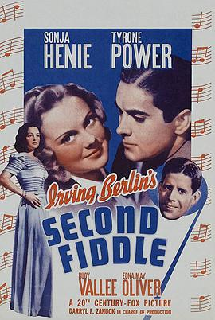
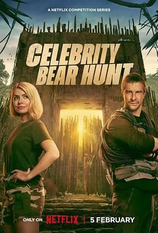
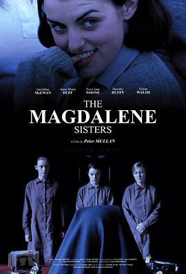

收藏下载分享
类型：综艺 / 真人秀 / 欧美综艺地区：英国年份：2025
导演：未知
演员：希莉 / 贝克尔 / 尤娜 / 布朗 / 贝尔 / Shirley Ballas / 洛蒂 / 霍莉 / 托马斯 / 鲍里斯 / 莫斯 / 麦戈文 / 安德森 / 斯蒂芙 / Danny Cipriani
线路1
这档以哥斯达黎加丛林为背景的竞赛节目由霍利·威洛比主持，12 位名人嘉宾成了恐怖猎人贝尔·格里尔斯的猎物。
 DVD
 第8集
已完结
 HD
确定